Let’s visualize our data
So far we have covered: - data types in R - reading in data - subsetting data - reading documentation - using functions - saving data Of course, we haven’t used one of R’s most powerful assets: graphics. This section is dedicated to creating a plot from the data. While R has very powerful default plotting functions, we will be using the “ggplot2” package as it relies on a consistent “grammar of graphics” that gives a clear relationship between the data and the visualization.
> ### What is ggplot2?The package ggplot2 is built off of the “grammar of graphics” in which plots are built layer by layer, starting with the coordinate plane and then adding geometric elements like lines, dots, bars, etc, and assigning metadata to values like color or shape. The advantage of ggplot2 over R’s native plotting is that the plots are saved as R objects and can be modified by adding layers or even replacing data. This tutorial will begin to scratch the surface of how to use ggplot2, but to get a better idea of what is possible, you can browse the resources at http://ggplot2.tidyverse.org/#learning-ggplot2 or examine the code of colleagues (e.g. Alejandro Rojas: https://github.com/alejorojas2/Rojas_Survey_Phytopath_2016). After this section, you should have the tools to: 1. Create a simple plot in ggplot2 2. Save plots Again, since this is a four hour workshop, we do not expect mastery, but this at least should give you a starting point. With that in mind, let’s get started!
> ### Getting started
>
> install.packages("ggplot2")Error in contrib.url(repos, "source"): trying to use CRAN without setting a mirror> library("ggplot2")Data for plotting with ggplot2 must be stored in a data frame
> fungicide <- read.csv("data/fungicide_dat.csv") # read.csv automatically outputs a data frameReady to plot? First of all let’s think: What visualization might be appropriate for these data? What should be on the axes? Should we use lines, points, bars, boxplots, etc? To help facilitate your thinking, you may refer to the cheatsheet provided in the ‘Help’ tab Step 1: Creating our plot ————————- > Note: if you are reading this script after attending the workshop, the plot > may look different due to the interactive nature of the workshop. This is > indtended as an example. Before we begin, we should become familiar with two functions: - ggplot() initializes a ggplot object from a data set. The data set needs to be a data frame. - aes() is a general way to specify what parts of the ggplot should be mapped to variables in your data. e.g. What should be the x and y variables?
> ### Creating the base of the ggplotTo create our ggplot with nothing on it, we should specify two things: 1. The data set (fungicide) 2. The mapping of the x and y coordinates (from the data set, using aes) > Note, we can specify the column names without using quotation marks.
> yield.plot <- ggplot(data = fungicide, mapping = aes(x = Treatment, y = Yield_bu_per_acre))If everything worked, you should see nothing. This is because ggplot2 returns an R object. This object contains the instructions for creating the visualization. When you print this object, the plot is created:
> yield.plot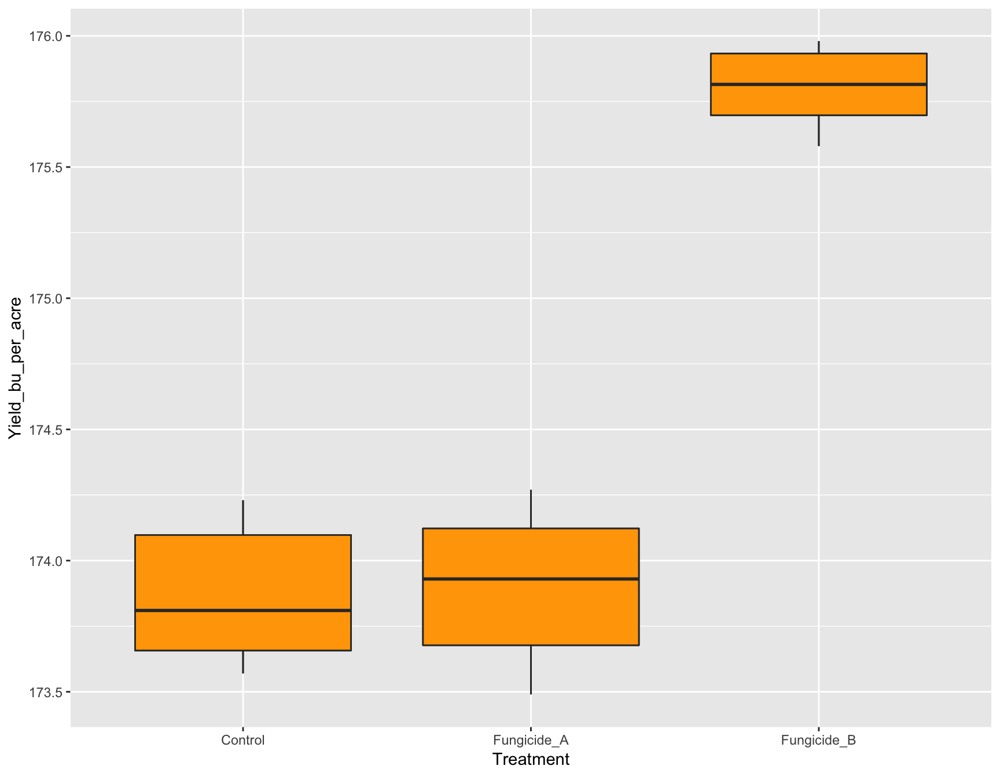
Now you should see a plot with nothing on it where the x and y axes are labeled “Treatment” and “Yield_bu_per_acre”, respectively. To break down what the above function did, it first took in the data set fungicide and then mapped the x and y aesthetics to the Treatment and Yield_bu_per_acre columns. Effectively, this told ggplot how big our canvas needs to be in order to display our data, but currently, it doesn’t know HOW we want to display our data; we need to give it a specific geometry.
> ### Adding a geometry layerAll functions that add geometries to data start with geom_, so if we wanted the data to be displayed as a line showing the increase of yield over time, we would use geom_line(). If we wanted to show the data displayed as points, we can use geom_point(). To add a geometry or anything to a ggplot object, we can just use the + symbol. Here, we will add boxplots. > Note: From here on out, I will be wrapping all commands with parentheses. > This allows the result of the assignment to be displayed automatically.
> (yield.plot <- yield.plot + geom_boxplot())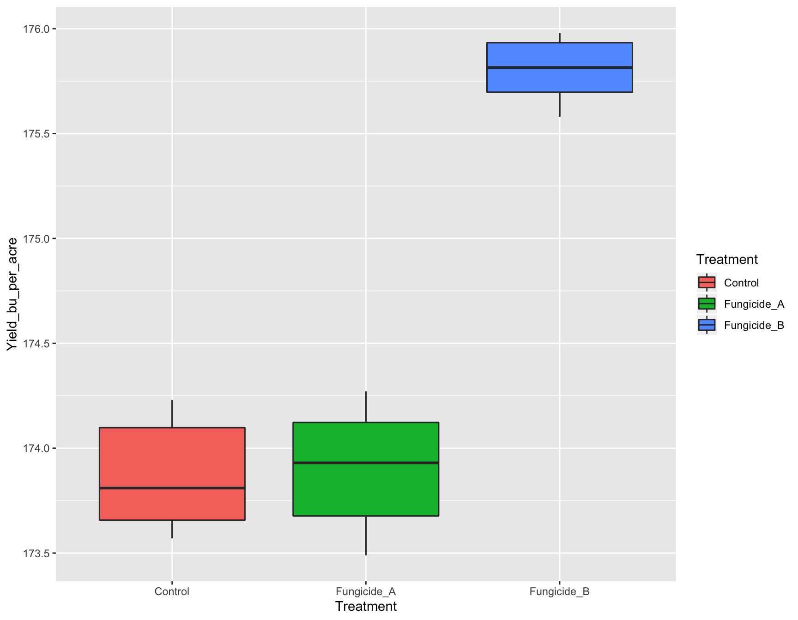
If we want to change the color of the boxplots from white (default) to orange, we can do this by adding geom_boxplot(fill = "orange").
> (yield.plot <- yield.plot + geom_boxplot(fill = "orange"))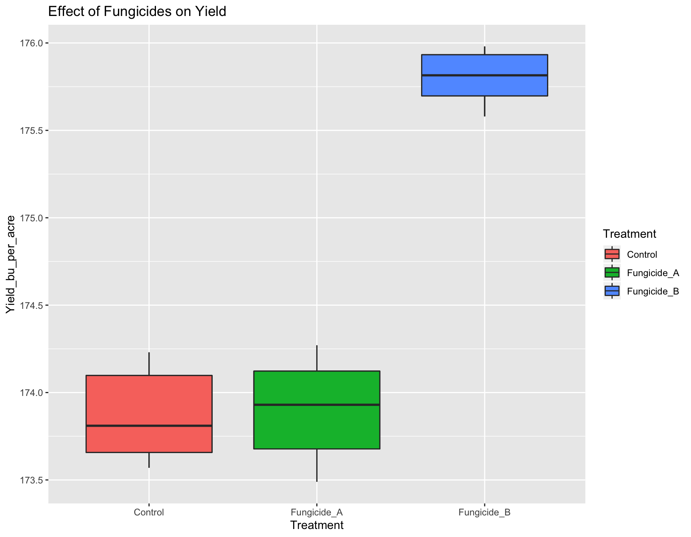
Instead of all the boxplots having the same color, it will be interesting if we could color them according to the Treatment.
> (yield.plot <- yield.plot + geom_boxplot(fill = Treatment))Error in layer(data = data, mapping = mapping, stat = stat, geom = GeomBoxplot, : object 'Treatment' not foundOops! There was an error. It cannot recognize that we are talking about the Treatment column from our data set. This is because we have to use the function aes() whenever we are referring to our data set.
> (yield.plot <- yield.plot + geom_boxplot(aes(fill = Treatment))) # This works!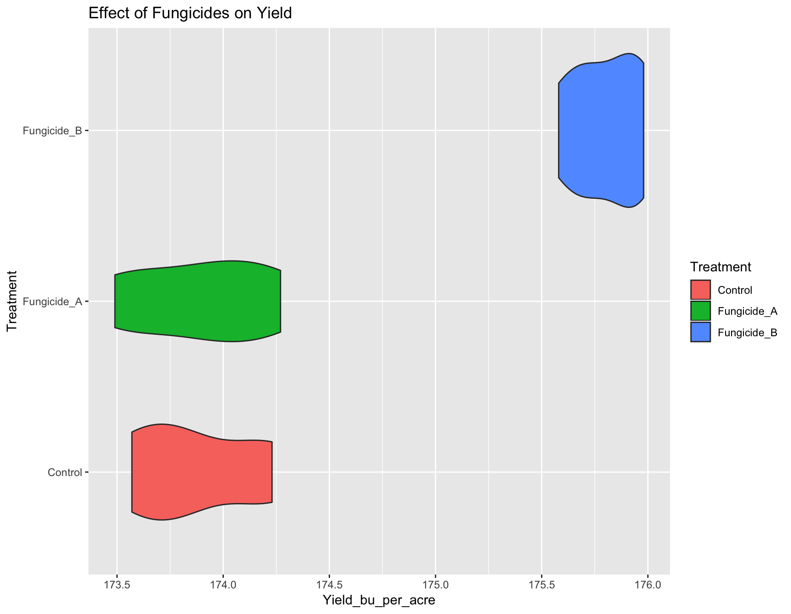
To give a title to our plot, we can use ggtitle().
> (yield.plot <- yield.plot + ggtitle("Effect of Fungicides on Yield"))We now have a fully functional and informative plot using only few lines of code! Producing a visualization of your data can be an extremely useful tool for analysis because it can allow you to see if there are any strange patterns or spurious correlations in your variables. We can click on ‘Zoom’ to view a bigger version of this plot. Of course, this plot is not quite publication ready. We need to add some customization. Let’s manipulate the aesthetics of the plot in how the data and labels are displayed. But first, use the cheatsheet or ‘Google’ to answer the following questions:
> ### Question 1: Create a `new_plot` that is similar to `yield.plot`, but the geometry is a violin plot instead of a box plot.
>
> new_plot <- ggplot(yield_dat, aes(x = Treatment, y = Yield_bu_per_acre)) +
+ geom_violin(aes(fill=Treatment)) +
+ ggtitle("Effect of Fungicides on Yield")Error in ggplot(yield_dat, aes(x = Treatment, y = Yield_bu_per_acre)): object 'yield_dat' not found> new_plotError in eval(expr, envir, enclos): object 'new_plot' not found> ### Question 2: Add another layer to the `new_plot` that flips the co-ordinate axes (rotates the plot at right angle).
>
> new_plot <- new_plot +
+ coord_flip()Error in eval(expr, envir, enclos): object 'new_plot' not found> new_plotError in eval(expr, envir, enclos): object 'new_plot' not found> ### Change axes labelsThis is easily done with xlab() and ylab():
> (yield.plot <- yield.plot + xlab("Treatment Applied"))
> (yield.plot <- yield.plot + ylab("Yield (bu/acre)"))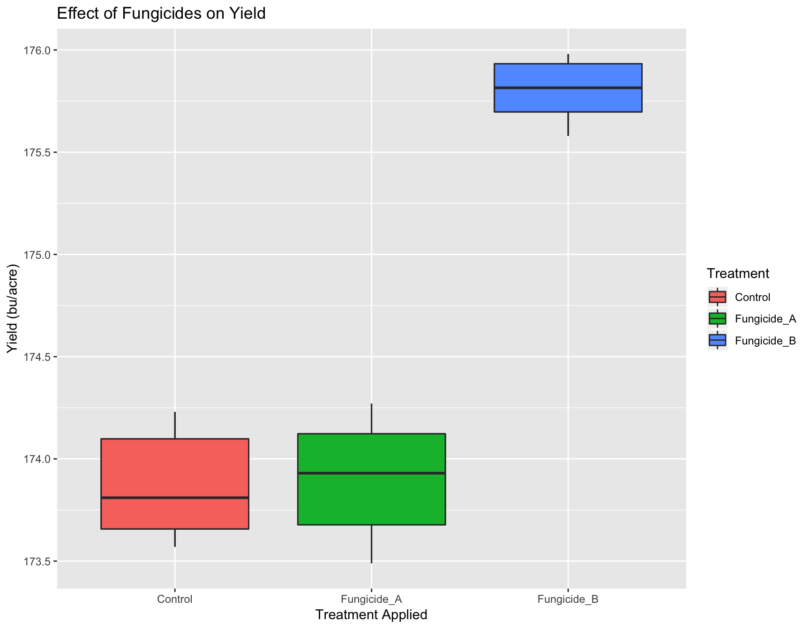
The labels are now okay, but it’s still not publication-ready. The font is too small, the background should have no gridlines and the axis text needs to be darker.
> ### Adjusting Look and Feel (theme)The first thing we can do is change the default theme from theme_grey() to theme_bw(). We will simultaneously set the base size of the font to be 14pt.
> (yield.plot <- yield.plot + theme_bw(base_size = 14))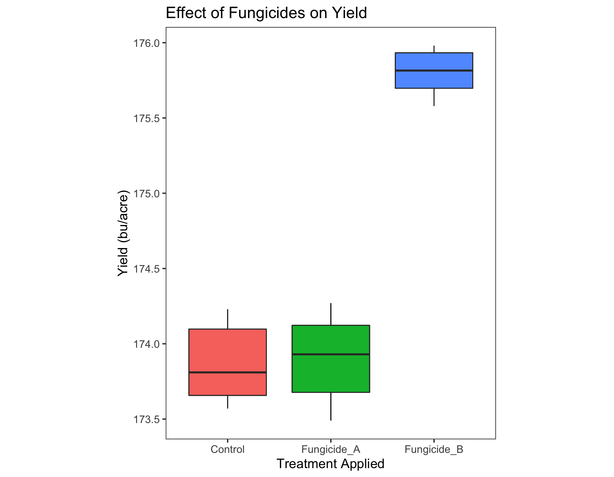
There are many different default themes available for ggplot2 objects that change many aspects of the look and feel. The ggthemes contains many popular themes such as fivethirtyeight and economist. Of course, we can make it prettier before including it in our final manuscript. To adjust granular aspects of the theme, we can use the theme() function, which contains a whopping 71 different options all related to the layout of the non-data aspects of the plot.
> ?theme
>
> stop("
+ Look at ?theme and figure out one of the following:
+ 1. remove the background grid in the panels
+ 2. center align plot title
+ ")Error in eval(expr, envir, enclos):
Look at ?theme and figure out one of the following:
1. remove the background grid in the panels
2. center align plot title
When we inspect the help page of the theme() function, we can find out how to adjust several parameters to make out plot look acceptable:
> (yield.plot <- yield.plot + theme(panel.grid = element_blank()))> (yield.plot <- yield.plot + theme(plot.title = element_text(hjust = 0.5)))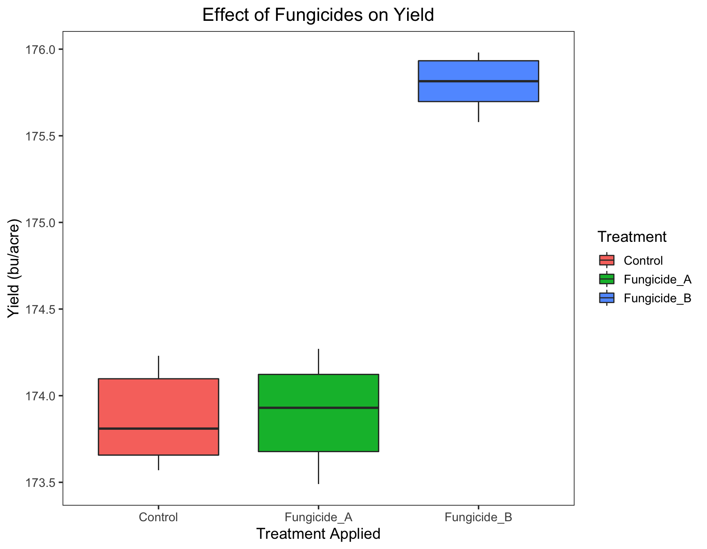
To format text elements of the plot, we can use the function element_text() inside theme(). Since we need to edit the text of the plot title, we need to specify plot.title = element_text(). Since we need to adjust the text horizontally in the center, we modify it to theme(plot.title = element_text(hjust = 0.5)). The information in the legend is repetitive, so we can remove it. If you ‘Google’ how to remove the legend in ggplot2, you will find that you can use guides(fill=FALSE).
> (yield.plot <- yield.plot + guides(fill=FALSE))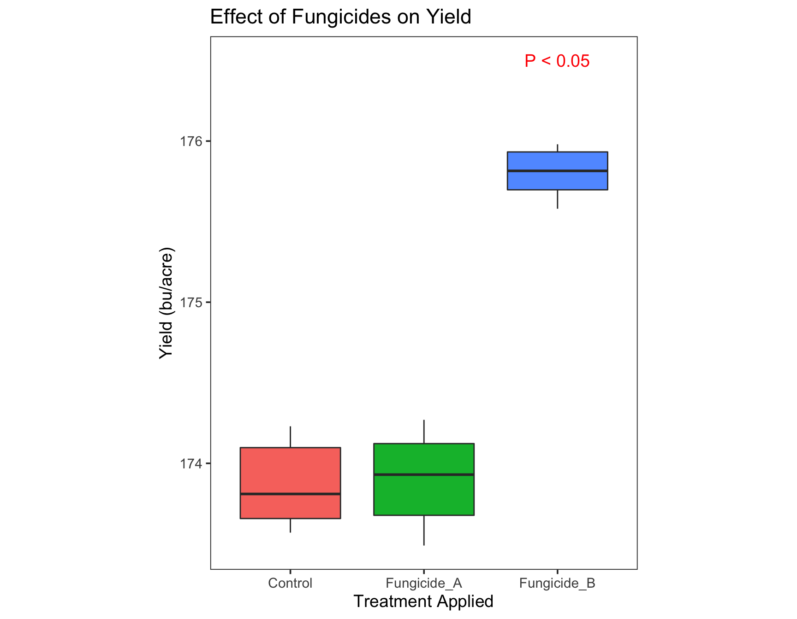
> ### Putting it all togetherBecause we can add information to a plot with the + symbol, we can add all of the elements in one go. Let’s combine what we have above.
> yield.plot <- ggplot(fungicide, aes(x = Treatment, y = Yield_bu_per_acre)) +
+ geom_boxplot(aes(fill = Treatment)) +
+ ggtitle("Effect of Fungicides on Yield") +
+ xlab("Treatment Applied") +
+ ylab("Yield (bu/acre)") +
+ theme_bw(base_size = 14) +
+ theme(panel.grid = element_blank(),
+ plot.title = element_text(hjust = 0.5)) +
+ guides(fill=FALSE)
> yield.plot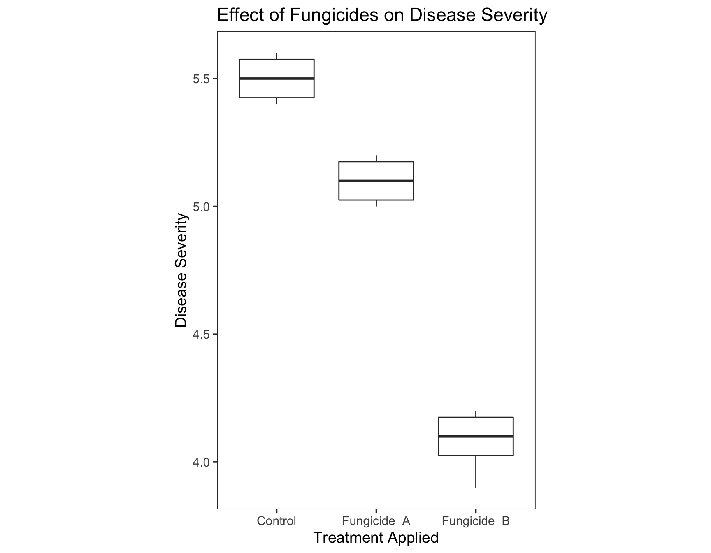
We can now create a similar plot for Severity Data.
> severity.plot <- ggplot(fungicide, aes(x = Treatment, y = Severity)) +
+ geom_boxplot() +
+ ggtitle("Effect of Fungicides on Disease Severity") +
+ theme_bw(base_size = 14) +
+ theme(panel.grid = element_blank(),
+ plot.title = element_text(hjust = 0.5)) +
+ xlab("Treatment Applied") +
+ ylab("Disease Severity")
> severity.plot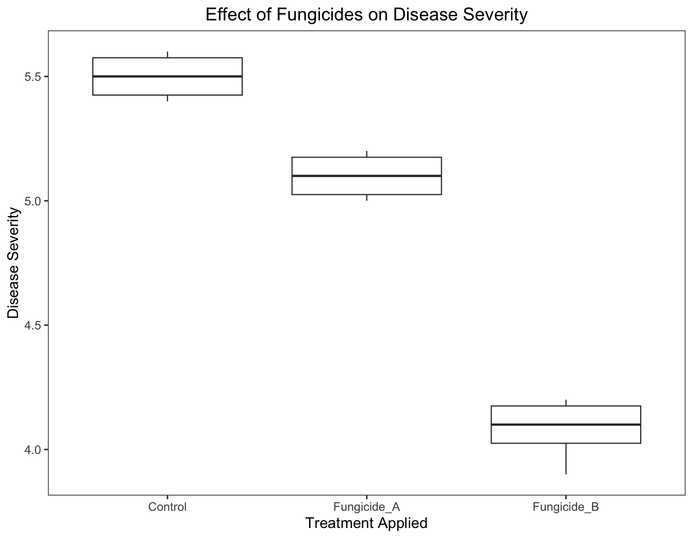
Let’s go back to yield.plot. How can we show that the boxplot of Fungicide_B is significantly different? Hint:annotate it.
> ?annotate
>
>
> ### Question 3: Unravel the working of annotate by pasting examples in the console.
>
> yield.plot <- yield.plot +
+ annotate(geom="text", x=3, y=177, label="P < 0.05", color="red", size = 5)
>
> yield.plot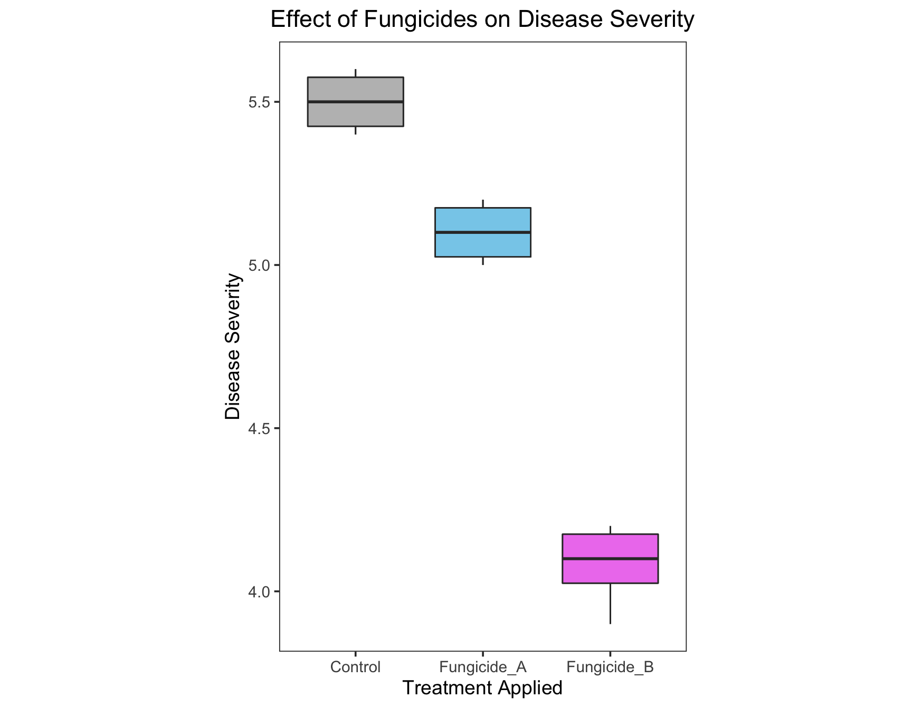
Step 2: Saving our plot
Now that we have our plot finished, we can save it with the ggsave() function, which allows us to save it as a pdf, png, svg, eps, etc. file. Or, we can save it by clicking on ‘Export’ (a tab just above the plot) and save it in the desired format.
> ggsave(filename = "results/figure1.pdf", width = 88, units = "mm")Saving 88 x 178 mm imageError in grDevices::pdf(file = filename, ..., version = version): cannot open file 'results/figure1.pdf'
This work is licensed under a Creative Commons Attribution-ShareAlike 4.0 International License.